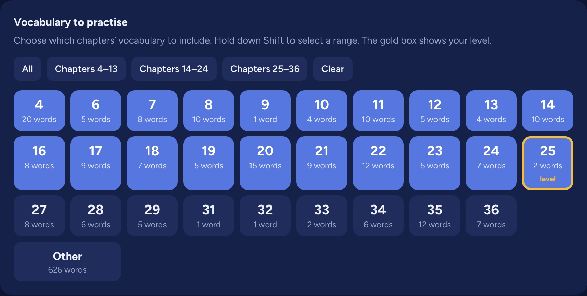
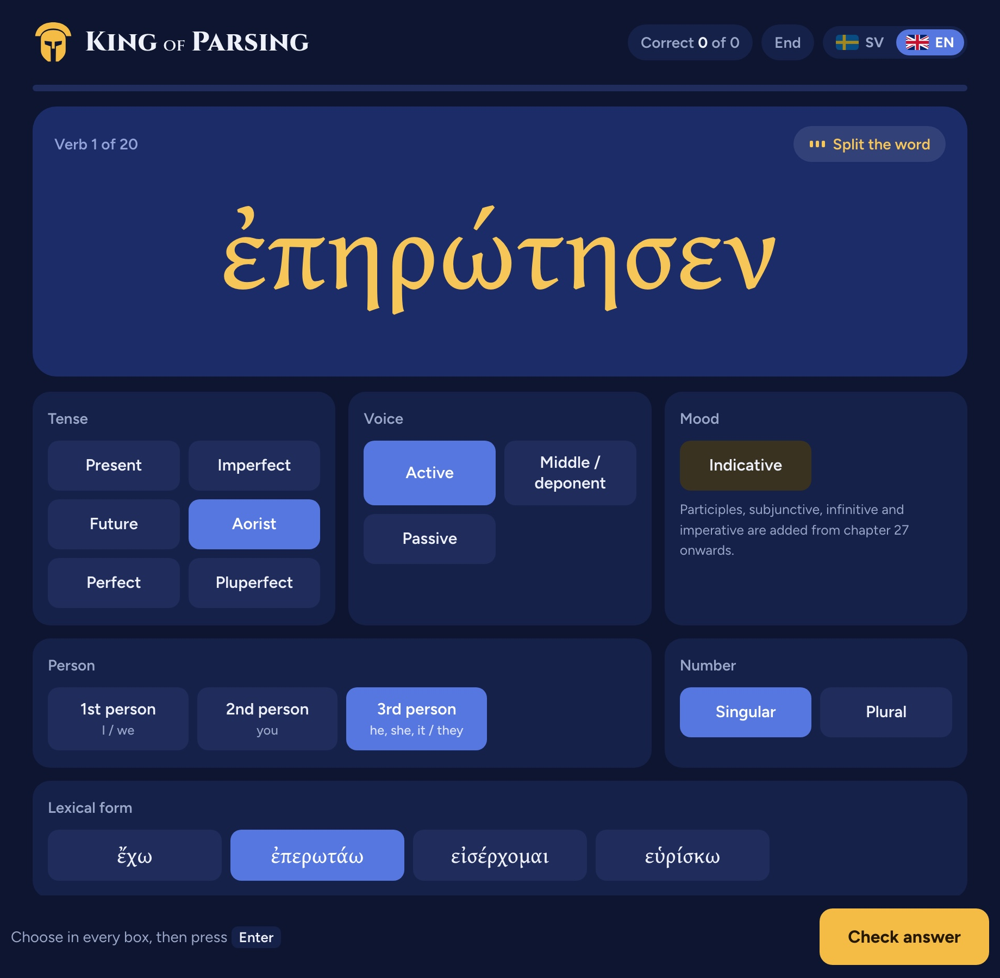
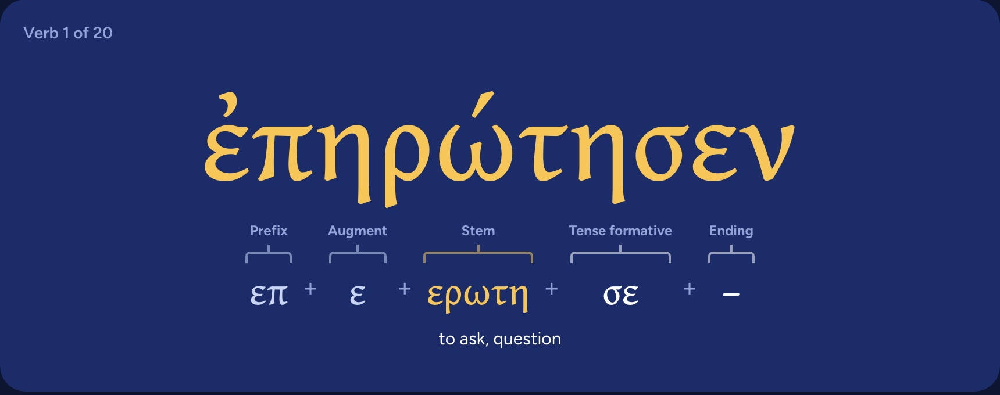
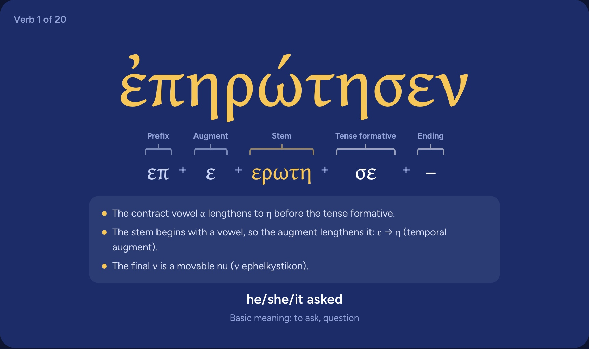
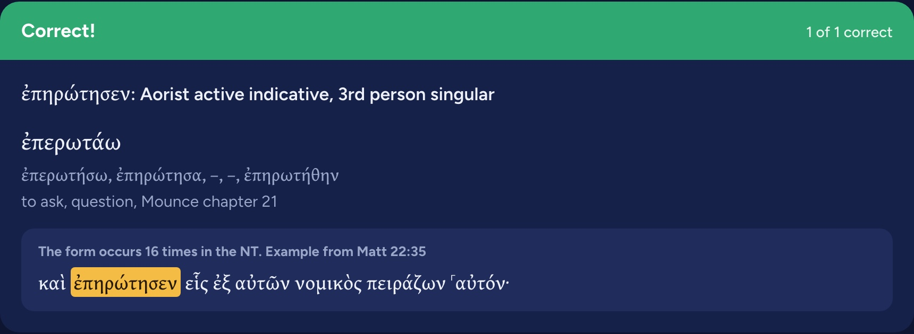

Your level
Adapts to your level
Lets you parse what you know now, and introduces new tenses, voices, moods and cases as you learn them.

Practise on real words from the New Testament, see how every form is built, and only meet the grammar you have already learned.

We’re currently in beta and there might be a few bugs left to work out, but you’re more than welcome to join.
Get early accessEvery form is a real word from the Greek New Testament, so the practice carries straight over to reading.
Your level
Lets you parse what you know now, and introduces new tenses, voices, moods and cases as you learn them.

Word breakdown
You get to see how the form you parse is actually constructed, and learn from it.

Explanations
Shows you how the words are actually formed, with simple explanations.

Scripture
Experience every word in its actual biblical context.

“Quote from a beta student goes here.”
“Quote from a beta student goes here.”
“Quote from a beta student goes here.”
You choose your textbook, and the vocabulary and grammar follow its chapters. Mounce’s Basics of Biblical Greek, Duff’s Elements of New Testament Greek and Croy’s A Primer of Biblical Greek are supported today.
The Greek alphabet and the first chapters of your textbook. Nouns can be practised once you have learned the nominative and accusative, and verbs once you reach the present active indicative.
Yes. Every form comes from the Greek New Testament, and each word breakdown is only shown if it rebuilds the actual form exactly.
Yes. It runs in the browser on phones, tablets and computers, and there is nothing to install.
It’s free while we are in beta.
ἐν ἀρχῇ ἦν ὁ λόγος
Join the beta and practise with real forms from the New Testament, at your own level.
Get early access